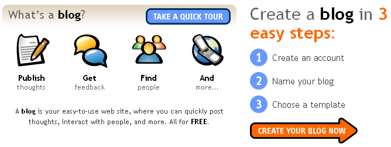
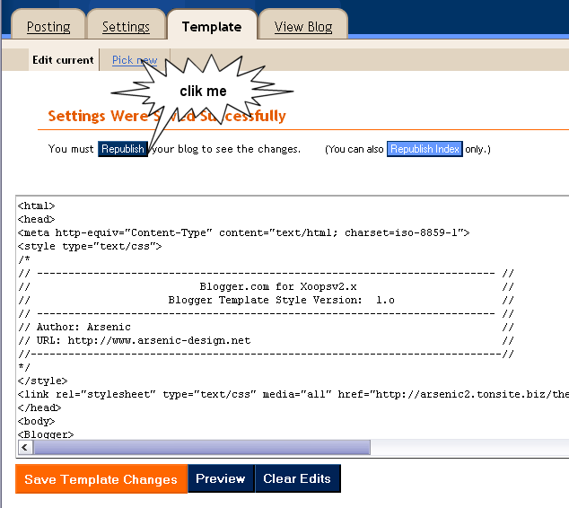
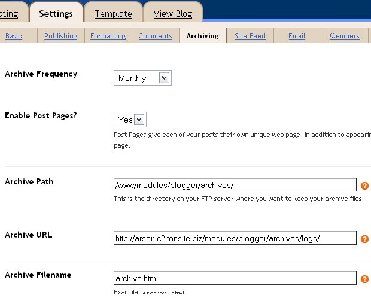

| Other language |
| Ouvrir un compte sur Blogger.com |
|
Ouvrez un compte sur www.blogger.com

|
| Installation du Template |
|
Ouvrez le fichier /install/blogger-template.html avec le bloc note chercher : Remplacer par : chercher : Remplacer par :  CTRL+A -> CTRL+C -> CTRL+v , puis cliquez sur "Save Template changes" |
| Configuration des Archives |
|
 ouvrir le fichier /blogger/archives.php chercher : Remplacer par : |
| Configuration de votre fichier style.css |
|
Se module est concut pour fonctioner avec le set de template Arsenic-Template v1 Ouvrez le fichier /xoops/themes/montheme/style.css et adapter ce code en fonction de votre design.
|
| Configuration et installation de Blogger.com for Xoopsv2.x |
|
Pour modifier l'éditorial, editez le fichier edito.txt, pour modifier les textes, editez le fichier conf.inc.php et les fichiers .txt du repertoire include. Ensuite uploader tout le contenu du zip sur votre ftp dans le dossier /modules/ et installer le module depuis l'admin de xoops. |
| Beta test |
|
Ce module est en beta test et je compte l'amélliorer pour m'en servir comme gestionaire de news. |
| Arsenic-Design.net |